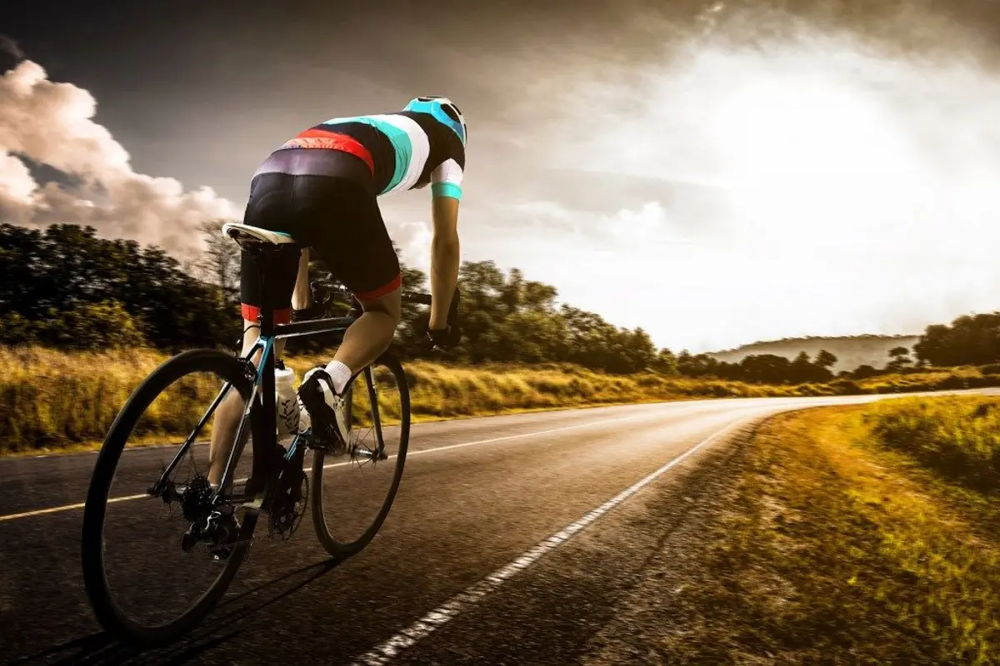

Todos los tipos de bicicletas disponibles bajo un mismo techo
La mejor manera de disfrutar los senderos que ofrece nuestra isla

En BIBIKES queremos que disfrutes de la naturaleza de Mallorca y por ello te ofrecemos las mejores bicis que puedas encontrar en la isla
Nuestro buscador te ofrece variedad para que escogas la bicicleta que más se adapte a tus requisitos personales y te aventures con ella a descubrir Mallorca
Ver bicicletas de montaña
Siente la brisa de la carretera en las mejores bicicletas

Recorre la isla con las mejores bicis que puedas imaginar para hacer grandes vueltas por carretera con una gran comodidad con las mejores marcas
Siéntete répido y ágil con unas bicis ligeras preparadas para largos recorridos
Ver bicicletas de carretera
Recorre las calles con calidad y comodidad

Las bicicletas de ciudad ofrecen comodidad y sencillez para desenvolverte por las calles de tu ciudad favorita en un abrir y cerrar de ojos
Con BIBIKES puedes escoger la que más se adapte a ti sin complicaciones para poder empezar rápidamente con tu recorrido en el sitio que te encuentres
Ver bicicletas de ciudad